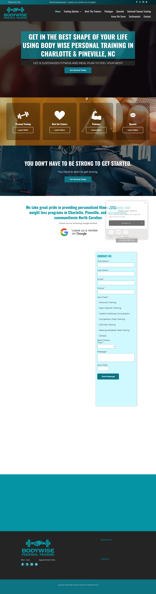

Body Wise Personal Training
Side-by-Side Report
Verdict: the current prototype is closer than the earlier redesign, but it still does not match the live site's color system and original graphics closely enough.
Visual comparison
Original

Prototype

What matches better now
- two-row navigation feel
- full-width hero with centered copy
- four promo-card rhythm under the hero
- motivational quote band
- contact-first lower-page structure
Why it still feels off
- The live site uses a more literal site-builder palette: white, dark gray/black, teal CTA blocks, and a bright cyan selected-nav accent.
- The live site uses real builder-hosted images and background assets, while the current prototype still uses lookalike imagery.
- The original page has more clutter, duplication, and awkward spacing; the prototype still smooths too much of that away.
Live graphics/assets now identified
{kind=link}
{kind=link}
{kind=link}
{kind=link}
{kind=link}
These are the assets I should use on the next Body Wise-only pass to make the prototype much more faithful.